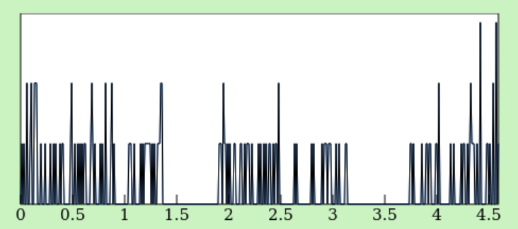

Pasteur is up!
After much experimentation with OCaml, js_of_ocaml and MirageOS, Pasteur is
finally updated to contain only OCaml code. Indeed, I keep in mind the goal to
do everything in OCaml!
Pasteur is a good unikernel to experiment with what is possible with OCaml. The
first difficulty with Pasteur was the multipart form. I was lucky to spend 5
years reading RFCs to finally implement multipart_form. The second difficulty
was JavaScript. Like zerobin, I wanted to have the ability to paste
and encrypt content on the client side. I ended up experimenting quite a
bit with brr. Then, I had the opportunity to integrate another project
that fulfilled a specific use case: having a read-only file system to hold the
CSS and JavaScript files that the HTTP server would transmit. It was also a
question of parting with Conduit once and for all. Finally, with MirageOS 4,
the goal was:
Prendre des p'tits bouts d'trucs et puis les assembler ensemble
In this article we will explain all these points one by one and give an overview of the ecosystem and what is finally possible with MirageOS.
multipart_form, RFCs and ecosystem
From my experience with email, I was able to read RFC 2045 (and its
sequel) which explains the multipart/form format. The latter is used by HTTP
1.1 (and it seems to me H2) to transmit information from an HTML form. There
are several ways of transmitting this information, by a GET request and a URL
which encodes the information (application/x-www-form-urlencoded) or by a
POST request which encodes in its content, in multipart/form format, this
information.
The latter is preferred in particular for its ability to upload files. As far as emails are concerned, it is through this method that one can transmit an attachment for example.
There are mainly 2 difficulties with the multipart/form format:
- format recursion, a multipart/form can contain a multipart/form
- transmission of content without exploding the memory
Recursion
I blogged a whole day to really understand after 6 months of reading RFCs, we could put an email in an email. But more globally, the multipart format is not a linear description of several contents but a tree of contents!
The real problem with this encoding is that recursion is not discovered through a formal definition of this format but through a description...
multipart-body := [preamble CRLF]
dash-boundary transport-padding CRLF
body-part *encapsulation
close-delimiter transport-padding
[CRLF epilogue]
body-part := MIME-part-headers [CRLF *OCTET]
encapsulation := delimiter transport-padding
CRLF body-part
Looking at this description, we can say that multipart/form is only a
succession (see encapsulation) of body-part. We can reduce this format to a
list of OCTETs associated with metadata (MIME-part-headers).
But that's without counting the next paragraph:
The use of a media type of "multipart" in a body part within another "multipart" entity is explicitly allowed. In such cases, for obvious reasons, care must be taken to ensure that each nested "multipart" entity uses a different boundary delimiter.
From this description, OCTET can contain a multipart/form so...
Memory consumption and streams
The other essential point of multipart_form is its ability,
not to output the contents of the form as they are, but a stream of these
contents. Indeed, in the case of uploading a file, we would not want to store
all the content in memory and then process it but rather let the user decide
how to consume the upload of the said file.
In this way, the multipart/form must be parsed and the content transmitted at
the same time - so that the user can consume/save it somewhere at the same
time:
val both : unit fiber * unit fiber -> unit fiber
val save_into_random_file : string stream -> unit fiber
let post http_body =
let `Parse fiber, stream_of_contents = Multipart_form.parse http_body in
let save () = Stream.get stream_of_contents >>= function
| None -> return ()
| Some stream -> save_into_file stream >>= save in
both fiber (save ())
In this example, the decoding of the multipart document is done in conjunction with saving the contents in random files. If the code runs, it can limit memory consumption to a ceiling regardless of the size of the files sent.

The image is not of good quality and the information is not clear, but one can
note in ordinate the memory consumption and in abcissa, the time. We can see
that we have spikes that reach a ceiling. This is the case where we save part
of the file in memory and as soon as we reach the ceiling, we execute the
save function which consumes the file.
The multipart_project project
I would really like to thank Armaël who helped me work on the API and make sure of these memory consumption aspects. Anyway, the project ended up being integrated into Dream. It is available here: multipart_form
Js_of_ocaml, brr and security
One of Pasteurr's goals was to follow zerobin in his design. The goal is that the server should not store the paste in clear text and that the only person in possession of the encryption key is the author of the paste.
The trick is to encrypt the content directly in the webbrowser and to transmit
only the encrypted content to the server (with POST and multipart_form).
Then, in JavaScript, we can ask (still on the client side) to redirect the
client to the result of its paste with its key.
This way, the key is never transmitted to the server (or more precisely, to the network). This ensures that the content is unbreakable if someone had control of the server! To do this, we need to make a JavaScript script to encrypt and send the POST request. Of course, writing JavaScript is out of the question.
Fortunately, we have the ability in our OCaml ecosystem to produce JavaScript code from OCaml code! Especially since we have a library that gives us access to cryptographic functions available from the webbrowser!
brr
So I used brr, fixed a little bug and produced a little script that does all this. I'd like to give special mention to dbuenzli who always makes very succinct and user-friendly APIs - which I haven't yet, but maybe one day.
open Brr
val iv : Tarray.Buffer.t
(* A random [int array] to initialize ciphers *)
let sym_key_gen =
let name = Crypto_algo.aes_cbc and length = 128 in
Crypto_algo.Aes_key_gen_params.v ~name ~length ()
let sym_exportable_key s =
let usages = Crypto_key.Usage.[ encrypt; decrypt; ] in
Subtle_crypto.generate_key s sym_key_gen ~extractable:true ~usages
let sym_algo ?iv () =
let iv = match iv with
| Some iv -> iv
| None ->
let iv = Tarray.create Tarray.Uint8 16 in
let () = Crypto.set_random_values Crypto.crypto iv in Tarray.buffer iv in
Crypto_algo.Aes_cbc_params.v ~iv ()
let sym_encrypt ?iv s key clear =
Subtle_crypto.encrypt s (sym_algo ?iv ()) key clear
let sym_decrypt ?iv s key cipher =
Subtle_crypto.decrypt s (sym_algo ?iv ()) key cipher
let encrypt body =
let subtl = Crypto.subtle Crypto.crypto in
let* key = sym_exportable_key subtl in
(* encrypt *)
let* cipher = sym_encrypt ~iv subtl key body in
let cipher = Tarray.uint8_of_buffer cipher in
let cipher = Tarray.to_hex_jstr cipher in
(* save it into the client-side's form *)
Form.Data.set data (Jstr.v "paste") cipher ;
(* POST *)
let init = Fetch.Request.init
~body:(Fetch.Body.of_form_data data) ~method':post () in
let* res = Fetch.request (Fetch.Request.v ~init:init (Jstr.v "/")) in
let* res = Fetch.Body.json (Fetch.Response.as_body res) in
(* Export the key *)
let* key = Subtle_crypto.export_key subtl Crypto_key.Format.jwk key in
let[@warning "-8"]
(`Json_web_key key : [ `Buffer of _ | `Json_web_key of _ ]) = key in
let* key = Fut.return
(Base64.encode (Base64.data_of_binary_jstr (Json.encode key))) in
(* Get the page from the server where we save the encrypted paste *)
let code = Jv.get res "code" |> Jv.to_jstr in
(* Generate the URL of the redirection which includes the key *)
let* path = make_path ~key code in
let* uri = Fut.return
(Uri.of_jstr (Jstr.concat
[ Uri.to_jstr (Window.location G.window); path ])) in
(* And redirect! *)
Window.set_location G.window uri ; Fut.ok ()
MirageOS and Js_of_ocaml
The most difficult part is the integration with MirageOS. From a compilation point of view, we have an element/artifact that our unikernel depends on. But this does not happen through our cross-toolchain (Solo5) but with the host compiler and js_of_ocaml (itself available from the host).
We should therefore be able to articulate dune (the build system of MirageOS
4) to explicitly ask to compile our script.ml into script.js using our host
toolchain (unlike our Solo5 toolchain). In dune's vocabulary, to talk about
toolchain, we talk about context.
Fortunately, MirageOS 4 offers two compilation steps, the first of which allows
us to generate dune rules that can be described in the Mirage project manifest,
the config.ml file.
We will first describe how to get our script.js file into the host context
using js_of_ocaml. Again, the integration of js_of_ocaml with dune has
become much simpler over time which makes the task easy:
(executable
(enabled_if (= %{context_name} "default"))
(name pasteur_js)
(modules pasteur_js)
(libraries rresult fmt brr tyxml)
(modes js))
Note especially the enabled_if which forces dune to produce our
pasteur_js.bc.js only in the host context1.
*.so, no META
required by js_of_ocaml to load otherlibs/ which are definitely not
provided in anyway by ocaml-solo5.
From the config.ml file, we can describe a new "device", which is an element
that can be required by our unikernel and from which we can specify a
particular dune rule.
let pasteur_js =
let dune _info =
[ Dune.stanzaf {dune|(subdir public
(rule
(enabled_if (= %%{context_name} "default"))
(deps ../js/pasteur_js.bc.js)
(target pasteur.js)
(action (copy %%{deps} %%{target}))))|dune} ] in
impl ~dune "Pasteur_js" job
The rule here says, still in the context of the host, to move our script into
the public/ folder which essentially contains all the static files needed for
our website (CSS file, JavaScript, etc). This allows us to precompile our
pasteur.js file and then integrate it into our unikernel.
A read-only filesystem
Finally, another element that may be interesting in the design of our website
is the ability to add a "block-device" which would be a file system containing
everything that is available in the public/ folder.
So I made docteur, it's a little program that generates a *.disk
file. This file can be added to the unikernel as an external resource. The
advantage of docteur is its compression ratio. If you have a lot of static
files that look alike, like for example a documentation, docteur offers 2
levels of compression so that 17.5 GB of HTML files can fit in a 250 MB
block-device!
I recently added the device to Mirage which makes it very easy to use:
let public = docteur ~extra_deps:[ "public/pasteur.js" ]
"relativize://public/"
let pasteur =
foreign "Unikernel.Make"
(... @-> kv_ro @-> job)
let () = register "pasteur"
[ pasteur $ ... $ public ]
Docteur has the advantage of serializing into a disk file 2 sources:
- a simple folder (like our
publicfolder) - a Git repository
The advantage is that these sources can be available locally (like our folder)
or from the internet (like a remote Git repository). In the latter case, the
mechanism for "cloning" the remote source is more or less the same as a simple
git clone.
Paf-le-chien
Finally, with a lot of experimentation, the abstraction proposed by Conduit regarding the server does not seem to be a good design. Indeed, the initialization of a server should not go through a dynamic and opaque mechanism such as Conduit when we finally want to be explicit in what we use (certificate, socket, port, etc.).
Abstraction is however required in order to inject a particular TCP/IP stack and TLS stack. But it seems clear that, in the context of MirageOS, the functor seems to be the right solution to this problem after all.
Paf proposes a functor which allows to create several functions in order to
initialize a server according to what the user wishes.
module type S = sig
type stack and flow and ippadr
type t
type dst = ipaddr * int
val init : port:int -> stack -> t Lwt.t
val http_service :
?config:Httpaf.Config.t ->
error_handler:(dst -> Httpaf.Server_connection.error_handler) ->
(flow -> dst -> Httpaf.Server_connection.request_handler) ->
t Paf.service
val https_service :
tls:Tls.Config.server ->
?config:Httpaf.Config.t ->
error_handler:(dst -> Httpaf.Server_connection.error_handler) ->
(flow -> dst -> Httpaf.Server_connection.request_handler) ->
t Paf.service
val alpn_service :
tls:Tls.Config.server ->
?config:Httpaf.Config.t * H2.Config.t ->
error_handler:
(dst ->
?request:Alpn.request ->
Alpn.server_error ->
(Alpn.headers -> Alpn.body) ->
unit) ->
(dst -> Alpn.reqd -> unit) ->
t Paf.service
val serve :
?stop:Lwt_switch.t -> 't Paf.service -> 't ->
[ `Initialized of unit Lwt.t ]
end
module Make (Time : Mirage_time.S) (Stack : Tcpip.Tcp.S)
: S with type stack = Stack.t
and type flow = Stack.flow
and type ipaddr = Stack.ipaddr
The only abstraction needed is the event loop required by http/af and h2 to
handle reads and writes. The latter is also available in a functor in the
Paf module and Paf_mirage only ceremonially provides an HTTP server from
the given TCP/IP stack and an HTTPS server from the same stack and ocaml-tls.
In this ceremony, there is of course the support of h2 which is finally very
close in terms of API than http/af.
Multiple iterations
The code of Paf is both very succinct and abstract which may be difficult to understand for a novice runner but the README.md or the tests give a good overview of its use in the context of MirageOS but also outside!
This shows above all that, beyond the implementations that can be found in OCaml of this or that protocol, as far as the MirageOS projects are concerned, a substantial API work (which can take several years) is done and leads the overall development and maintenance of our ecosystem.
In this, I would like to thank CraigFe, Hannes and
Lucas for helping me iterate on Paf several times to get closer
and closer to the right solution for HTTP servers. It also and above all shows
that an API work remains fundamentally collective since it becomes possible
only from interactions and uses.
Conclusion
The website is available here: paste.osau.re. What this article shows is the involvement of people from the MirageOS community and elsewhere who have added their vision directly or indirectly to the project. The development in onion layer of what will allow to produce Pasteur shows the reusability of the knowledge of each one near other software.
It's sharing :) ! MirageOS does not wish to offer a monolithic solution to several problems but a scattered and immense ecosystem which can satisfy everyone in time. As I said in the introduction, Pasteur is an experiment that synthesizes years of work on several domains. And the crucial element to finally build this tiny website is basically a naive interest in doing everything in OCaml with unikernels :p !
Just for fun!